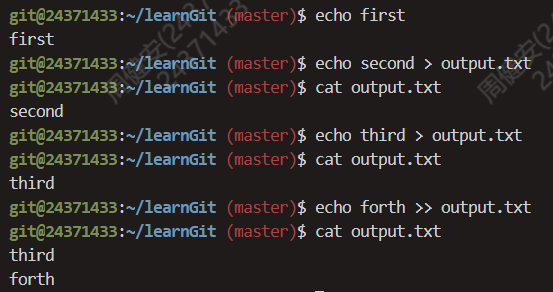

⌈BUAA OS⌋ lab0
一、思考题
Thinking 0.1
执行命令
cat Untracked.txt和cat Stage.txt，对比两次运行的结果，体会README.txt两次所处位置的不同。执行命令
cat Modified.txt，观察其结果和第一次执行add命令之前的status是 否一样，并思考原因。
顺着题意指示进行操作。可见 cat Untracked.txt 命令的运行结果中，README.txt 属于未追踪文件，而在 cat Stage.txt 命令的运行结果中属于要提交的变更列表。
cat Modified.txt 的运行结果与第一次不一样。第一处是“未追踪文件”，此处是“要提交的变更”。
Thinking 0.2
- 思考一下箭头中的
add the file、stage the file和commit分别对应的是 Git 里的哪些命令呢？
-
add the file和stage the file都是指：1
$ git add <file> -
commit是指：1
$ git commit
Thinking 0.3
代码文件
print.c被错误删除时，应当使用什么命令将其恢复？代码文件
print.c被错误删除后，执行了git rm print.c命令，此时应当使用什么命令将其恢复？无关文件
hello.txt已经被添加到暂存区时，如何在不删除此文件的前提下将其移出暂存区？
-
应当使用的命令是：
1
$ git restore print.c -
应当使用的命令是：
1
2$ git reset HEAD print.c
$ git restore print.c -
执行以下命令：
1
$ git reset HEAD hello.txt
Thinking 0.4
- 观察执行三次
reset指令后git log运行结果的变化。
- 第一次的变化：第三次提交消失，当前的状态移到第二次提交。
- 第二次的变化：第二次提交消失，当前的状态移到第一次提交。
- 第三次的变化：第二、三次提交都恢复记录，当前的状态移回第三次提交。
Thinking 0.5
执行如下命令, 并查看结果
1 | |
运行结果如图所示：

Thinking 0.6
echo echo Shell Start与echo 'echo Shell Start'效果是否有区别。echo echo $c>file1与echo 'echo $c>file1'效果是否有区别。
- 没有明显区别
- 效果完全不同。前者执行了完整内容，而后者只打印了一串字符串。
二、难点分析
我认为难点主要体现在以下几个方面吧：
- 做到对 Git 的熟练运用。比如我在上机的时候想要退回之前的某个版本，对着指导书查了半天也没有弄明白具体怎么操作，输入哪些指令。个人认为需要掌握的命令除了基础的
add,push,commit，还包括check,reset这些在版本管理中不可或缺的指令。 - 关于 Shell 编程。基础语法与我们熟知的 C, Java 等大相径庭，尤其需要我们注意的是关于方括号、花括号、美元符号的不同组合以达到不同的效果。上机的时候也因为这个吃到苦头。
- 关于Linux中的CLI操作。
grep,sed,awk的参数意义，需要上手实践。
三、实验体会
第一次接触命令行开发环境。lab0 上机没有做好准备 exam 直接挂了！赛前豪言壮语，赛时沉默不语，赛后胡言乱语这一块。但是我深知这是一门很重要的课程，因此我在接下来的时间里将投入更多精力在这门课程中。
关于大模型的运用这一块。上学期当程设助教的时候我对大一学生滥用大模型痛心疾首。现在我疑似有点步他们后尘了。写作业的时候更多的是问ai怎么说，而不是经历一个先探索再反复的学习流程。这让我上机的时候少了很多底气。
四、原创说明
内容完全原创。感谢群u在课程相关问题上的帮助。